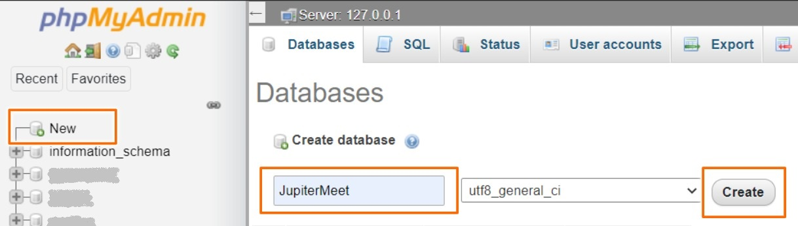

Installation
Prerequisites
The following are the dependecies, you can follow the steps to get them done, or skip if you have them already setup.
First Step
Log into your server as root and make sure your server is entirely up-to-date. Use sudo if permission denied error occurs.
apt update
apt full-upgrade
Web Server & SSL
You can use any web server, we will use Apache in this document.
Apache
Follow this section if you have a paid SSL
apt install -y apache2
[Or] Apache with Certbot
Follow this section if you want to use a free SSL
apt install -y software-properties-common
add-apt-repository ppa:certbot/certbot
apt install -y python-certbot-apache
Configure Apache
Add "ServerName yourdomain.in;" to below file and reload Apache.
vim /etc/apache2/sites-available/yourdomain.in.conf
apache2ctl configtest
systemctl reload apache2
SSL Certificates
Install SSL certificates with certbot.
certbot --apache -d yourdomain.in
Open the below file and append jupitermeet/public at the end of DocumentRoot.
vim /etc/apache2/sites-available/000-default-le-ssl.conf
For ex: DocumentRoot /var/www/html/jupitermeet/public
In the same file add the following block after DocumentRoot
<Directory /var/www/html>
Options Indexes FollowSymLinks
AllowOverride All
Require all granted
</Directory>
Enable the rewrite module
a2enmod rewrite
Restart the server
systemctl restart apache2
PHP
apt install software-properties-common
add-apt-repository ppa:ondrej/php
apt update
apt install -y php7.3
Install required extensions
apt install php7.3 php7.3-mbstring php7.3-mysqli php7.3-curl php7.3-dom php7.3-xml php7.3-xmlwriter php7.3-common php7.3-json php7.3-zip php7.3-bcmath php7.3-gettext -y
Verify
php -v
MySQL
Install MySQL and phpMyAdmin.
NodeJS
Download and install NodeJS and NPM.
apt install -y curl
curl -sL https://deb.nodesource.com/setup_12.x | bash -
apt install -y nodejs
Install a process manager tool
npm i -g pm2
Verify
node -v
npm -v
TURN Server (optional)
Install and configure CoTURN. If you want to use any third party service then skip this step.
apt install -y coturn
Update the config file
vim /etc/turnserver.conf
Now, update the details and put this code on top of the file:
- cert=/etc/letsencrypt/live/yourdomain.in/fullchain.pem
- pkey=/etc/letsencrypt/live/yourdomain.in/privkey.pem
- user=username:password
- realm=yourdomain.in
- lt-cred-mech
Permission
Unzip the jupitermeet folder into the web folder (/var/www/html).
cd /var/www/html/jupitermeet
chmod -R 775 . storage bootstrap system .env
chown -R $USER:www-data . storage bootstrap system .env
Installation
- Create an empty database from phpMyAdmin 
Now, you can continue to the Application setup step.